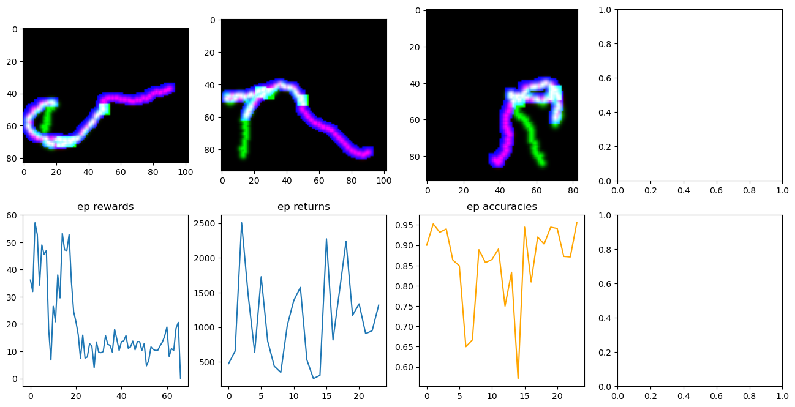

Tracking Inference
[11]:
%load_ext autoreload
%autoreload 2
%matplotlib inline
The autoreload extension is already loaded. To reload it, use:
%reload_ext autoreload
[16]:
import json
import sys
import torch
sys.path.append("../")
from environments.sac_tracking_env import Environment
from models import ResNet3D, ResidualBlock3D, ConvNet
from solvers import sac
DEVICE = "cuda:0" if torch.cuda.is_available() else "cpu"
dtype = torch.float32
Instantiate environment
[41]:
config_file = "../configs/sac_inference_curves_no_artifacts_b-2.json"
with open(config_file) as f:
params = json.load(f)
img_path = params["img_path"]
outdir = params["outdir"]
name = params["name"]
step_size = params["step_size"] if "step_size" in params else 1.0
step_width = params["step_width"] if "step_width" in params else 1.0
batch_size = params["batchsize"] if "batchsize" in params else 256
tau = params["tau"] if "tau" in params else 0.005
gamma = params["gamma"] if "gamma" in params else 0.99
lr = params["lr"] if "lr" in params else 0.001
alpha = params["alpha"] if "alpha" in params else 1.0
beta = params["beta"] if "beta" in params else 1e-3
friction = params["friction"] if "friction" in params else 1e-4
n_episodes = params["n_episodes"] if "n_episodes" in params else 100
init_temperature = params["init_temperature"] if "init_temperature" in params else 0.005
target_entropy = params["target_entropy"] if "target_entropy" in params else 0.0
branching = params["branching"] if "branching" in params else True
section_masking = params["section_masking"] if "section_masking" in params else False
patch_radius = 17
env = Environment(img_path,
radius=patch_radius,
step_size=step_size,
step_width=step_width,
max_len=1000,
alpha=alpha,
beta=beta,
friction=friction,
branching=branching,
section_masking=section_masking)
Instantiate actor network
[42]:
in_channels = 4
actor = ConvNet(chin=in_channels, chout=5)
actor = actor.to(device=DEVICE,dtype=dtype)
if "sac_weights" in params:
sac_path = params["sac_weights"]
state_dicts = torch.load(sac_path)
actor.load_state_dict(state_dicts["policy_state_dict"])
Perform tracking
[43]:
sac.inference(env, actor, outdir, save=False, manual=True)
TP: 1, FP: 1, FN: 2, TN: 63

num branches: 3
0%| | 5/1000 [01:43<5:46:08, 20.87s/it]
Exiting inference.
0%| | 5/1000 [01:56<6:24:47, 23.20s/it]
Exiting inference.
---------------------------------------------------------------------------
RuntimeError Traceback (most recent call last)
Cell In[43], line 1
----> 1 sac.inference(env, actor, outdir, save=False, manual=True)
File ~/neurotrack/notebooks/../solvers/sac.py:579, in inference(env, actor, outdir, n_trials, show, save, manual)
575 break
577 obs = env.get_state()
--> 579 value, index = torch.max(torch.stack(coverages), dim=0)
580 coverage = value.item()
581 index = int(index)
RuntimeError: stack expects a non-empty TensorList
[ ]: